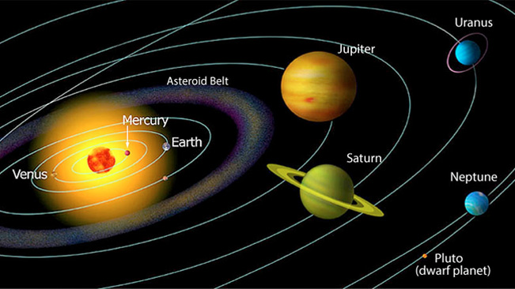

Astronomy is a natural science that studies celestial objects and phenomena. It applies mathematics, physics, and chemistry, in an effort to explain the origin of those objects and phenomena and their evolution. Objects of interest include planets, moons, stars, galaxies, and comets; the phenomena include supernova explosions, gamma ray bursts, and cosmic microwave background radiation. More generally, all astronomical phenomena that originate outside Earth's atmosphere are within the purview of astronomy. A related but distinct subject, physical cosmology, is concerned with the study of the Universe as a whole.[1]
Astronomy is one of the oldest of the natural sciences. The early civilizations in recorded history, such as the Babylonians, Greeks, Indians, Egyptians, Nubians, Iranians, Chinese, Maya, and many ancient Indigenous Peoples of The Americas performed methodical observations of the night sky. Historically, astronomy has included disciplines as diverse as astrometry, celestial navigation, observational astronomy and the making of calendars, but professional astronomy is now often considered to be synonymous with astrophysics.[2]
The Roman orator Cicero objected to astrology Cicero stated the twins objection (that with close birth times, personal outcomes can be very different), later developed by Saint Augustine.[28] He argued that since the other planets are much more distant from the earth than the moon, they could have only very tiny influence compared to the moon's.[29] He also argued that if astrology explains everything about a person's fate, then it wrongly ignores the visible effect of inherited ability and parenting, changes in health worked by medicine, or the effects of the weather on people.[30] Plotinus argued that since the fixed stars are much more distant than the planets, it is laughable to imagine the planets' effect on mankind should depend on their position with respect to the zodiac. He also argues that the interpretation of the moon's conjunction with a planet as good when the moon is full, but bad when the moon is waning, is clearly wrong, as from the moon's point of view, half of her surface is always in sunlight; and from the planet's point of view, waning should be better, as then the planet sees some light from the moon, but when the moon is full to us, it is dark, and therefore bad, on the side facing the planet.[31] Favorinus argued that it was absurd to imagine that stars and planets would affect human bodies in the same way as they affect the tides,[32] and equally absurd that small motions in the heavens cause large changes in people's fates. Sextus Empiricus argued that it was absurd to link human attributes with myths about the signs of the zodiac.[33] Carneades argued that belief in fate denies free will and morality; that people born at different times can all die in the same accident or battle; and that contrary to uniform influences from the stars, tribes and cultures are all different.[34] Hellenistic Egypt[edit]
During the 20th century, the field of professional astronomy split into observational and theoretical branches. Observational astronomy is focused on acquiring data from observations of astronomical objects, which is then analyzed using basic principles of physics. Theoretical astronomy is oriented toward the development of computer or analytical models to describe astronomical objects and phenomena. The two fields complement each other, with theoretical astronomy seeking to explain observational results and observations being used to confirm theoretical results.
DOWNLOAD THE COMPLETE INFO